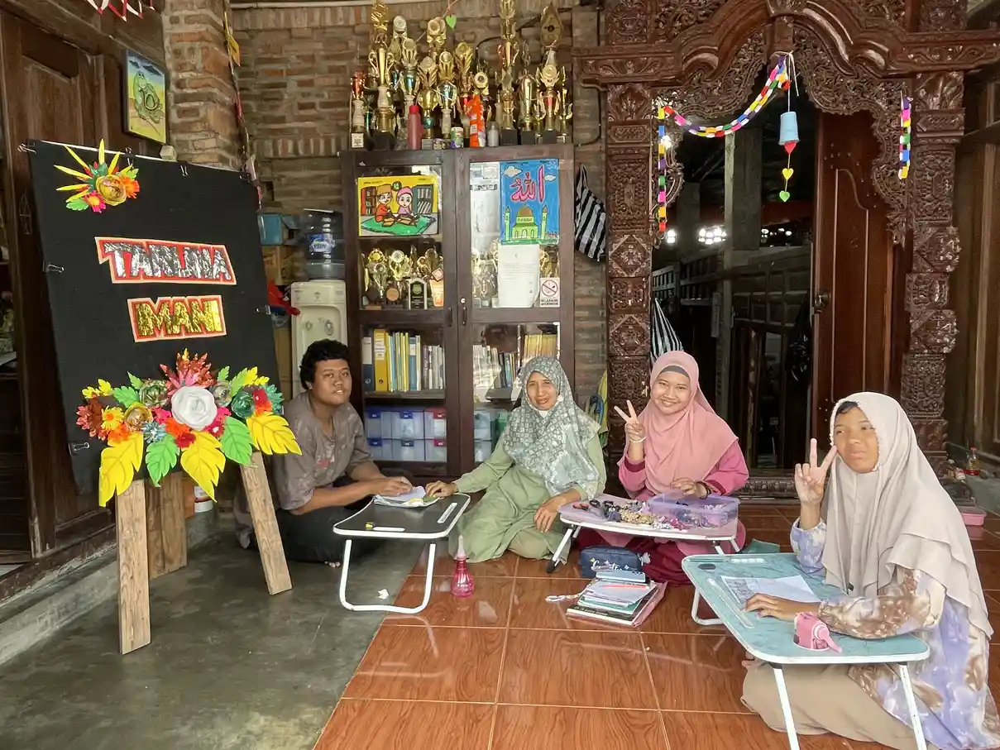
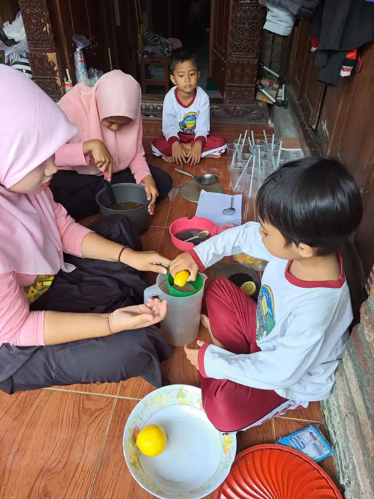
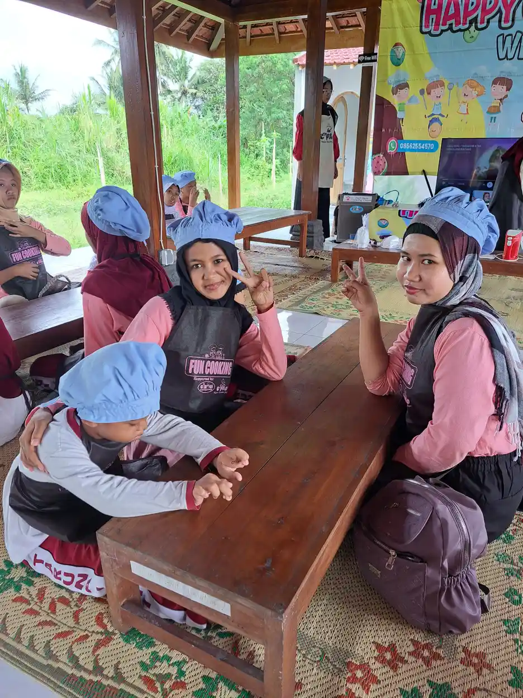

Biaya homeschooling di Indonesia mulai sekitar Rp125.000 sampai Rp310.000 per bulan di PKBM dan komunitas yang paling hemat, dan Rp350.000 sampai Rp1,3 juta per bulan di lembaga homeschooling Jakarta yang juga memungut uang pangkal atau registrasi awal Rp6 juta sampai Rp9,5 juta. Angka ini kami ambil dari daftar biaya lembaga yang dipublikasikan Warta Ekonomi (Oktober 2026), Tangsel Media (Juni 2026), dan Tuwaga (Juni 2025). Setiap angka di artikel ini ditautkan ke sumbernya dan diperiksa pada 21 Oktober 2026.
Perlu dicatat sejak awal: tidak ada tarif resmi nasional untuk homeschooling. Setiap lembaga menetapkan biaya berbeda tergantung kota, jenjang, dan fasilitas, dan angka dari artikel media bisa berubah, jadi selalu minta rincian tertulis langsung ke penyelenggara sebelum mendaftar. Pembahasan mengapa homeschooling cocok untuk anak berkebutuhan khusus, jenis-jenisnya, dan legalitas ijazahnya sudah kami tulis di artikel homeschooling untuk ABK: panduan dan legalitas; artikel ini fokus pada sisi anggarannya.
Daftar Isi
- Tabel Biaya Homeschooling dan PKBM 2025 sampai 2026
- Homeschooling Legal di Indonesia, Ini Dasarnya
- Tiga Jalur Homeschooling dan Model Biayanya
- Rincian Biaya Homeschooling Mandiri
- Biaya Komunitas Homeschooling dan PKBM
- Biaya Lembaga Homeschooling Premium
- Biaya Ujian Kesetaraan Paket A, B, dan C
- Biaya Tambahan untuk Anak Berkebutuhan Khusus
- Tips Mengatur Anggaran Homeschooling
- FAQ Seputar Biaya Homeschooling
Tabel Biaya Homeschooling dan PKBM 2025 sampai 2026
Tabel berikut merangkum biaya per lembaga sesuai yang tercantum di sumbernya. Biaya PKBM di baris atas adalah program Paket C (setara SMA); biaya lembaga homeschooling dirinci per jenjang bila sumbernya merinci.
| Lembaga | Pendaftaran atau uang pangkal | Biaya rutin | Sumber |
|---|---|---|---|
| Sekolah Sarjana Desa (Paket C) | Pendaftaran Rp200.000, uang pangkal Rp1.000.000 | Rp150.000 per bulan | Warta Ekonomi, Okt 2026 |
| PKBM Pelita Pratama (Paket C) | Pendaftaran Rp250.000 | Rp250.000 (kelas 10), Rp280.000 (kelas 11), Rp310.000 (kelas 12) per bulan | Warta Ekonomi, Okt 2026 |
| PKBM Harapan Bangsa (Paket C) | Pendaftaran Rp500.000 | Rp2.700.000 untuk kelas 10 sampai 12 | Warta Ekonomi, Okt 2026 |
| PKBM Tan Malaka (Paket C) | Termasuk pendaftaran Rp550.000 | Biaya program Rp3.250.000 | Warta Ekonomi, Okt 2026 |
| Flexi School Bintaro (Tangerang Selatan) | Pendaftaran Rp200.000 | SPP Rp125.000 sampai Rp980.000 per bulan, modul Rp500.000 sampai Rp3.000.000 per tahun | Tangsel Media, Jun 2026 |
| HSKS Distance Learning (Tangerang Selatan) | Tidak dirinci sumber | SPP Rp400.000 sampai Rp900.000 per bulan | Tangsel Media, Jun 2026 |
| Windsor Homeschooling (Jakarta) | Formulir Rp150.000; uang pangkal SD Rp8.500.000, SMP dan SMA Rp8.000.000 | SPP mandiri Rp350.000, komunitas Rp800.000, tutorial Rp1.100.000, privat Rp1.300.000 per bulan | Tuwaga, Jun 2025 |
| Homeschooling HSPG (Jakarta), SD | Pendaftaran Rp350.000, registrasi Rp3.000.000, uang pangkal Rp6.000.000 | SPP Rp1.100.000 per bulan | Tuwaga, Jun 2025 |
| Homeschooling HSPG (Jakarta), SMA | Pendaftaran Rp400.000, registrasi Rp4.000.000, uang pangkal Rp8.000.000 | SPP Rp1.200.000 per bulan | Tuwaga, Jun 2025 |
| Golden Homeschooling (Jakarta) | Registrasi awal Rp9.500.000 | SPP Rp900.000 per bulan | Tuwaga, Jun 2025 |
| INRII Homeschooling, SD | Tidak dirinci sumber | SPP Rp650.000 per bulan, buku Rp1.000.000 per tahun, kegiatan Rp1.500.000 per semester | Tuwaga, Jun 2025 |
Dua catatan saat membaca tabel. Pertama, Tuwaga dan Tangsel Media adalah media yang merangkum brosur lembaga, bukan situs resmi lembaga itu sendiri, jadi perlakukan angkanya sebagai titik awal pertanyaan, bukan harga pasti. Kedua, PKBM bisa jauh lebih murah bila didanai pemerintah daerah: pada Juli 2022 detikEdu memberitakan Dinas Pendidikan DKI Jakarta membuka pendaftaran PKBM secara gratis dan membebaskan peserta dari biaya pendidikan hingga lulus. Tanyakan program serupa ke dinas pendidikan di daerah Anda.
Homeschooling Legal di Indonesia, Ini Dasarnya
Sebelum bicara angka, pastikan dulu fondasinya: homeschooling atau sekolahrumah adalah jalur pendidikan yang sah di Indonesia. Payung hukumnya antara lain Permendikbud Nomor 129 Tahun 2014 tentang Sekolahrumah, yang mengatur sekolahrumah sebagai bagian dari pendidikan informal dan nonformal, baik dalam bentuk tunggal (satu keluarga), majemuk (beberapa keluarga), maupun komunitas.
Konsekuensi praktisnya untuk anggaran: anak homeschooling tetap bisa memperoleh ijazah melalui ujian pendidikan kesetaraan, yaitu Paket A (setara SD), Paket B (setara SMP), dan Paket C (setara SMA), yang biasanya ditempuh melalui PKBM atau Pusat Kegiatan Belajar Masyarakat. Artinya, mau seberapa pun hemat jalur yang Anda pilih, ada satu pos biaya yang hampir pasti muncul: biaya terdaftar di satuan pendidikan nonformal dan biaya ujian kesetaraannya. Pos ini akan kita hitung di bagian selanjutnya.
Memahami legalitas ini juga melindungi Anda dari penawaran yang menyesatkan. Lembaga yang baik akan transparan menjelaskan statusnya: apakah ia PKBM berizin, komunitas yang menginduk ke PKBM, atau sekadar penyedia les. Status inilah yang menentukan apakah anak Anda punya jalur resmi menuju ijazah.
Inti Singkat
Dari sumber yang kami periksa: PKBM Paket C memungut pendaftaran Rp200.000 sampai Rp550.000 dengan iuran Rp150.000 sampai Rp310.000 per bulan atau biaya program Rp2,7 juta sampai Rp3,25 juta; lembaga homeschooling di Jakarta memungut uang pangkal atau registrasi awal Rp6 juta sampai Rp9,5 juta dengan SPP Rp350.000 sampai Rp1,3 juta per bulan. Selalu konfirmasi tarif terbaru ke lembaga masing-masing.
Tiga Jalur Homeschooling dan Model Biayanya
Jalur pertama adalah homeschooling mandiri atau tunggal: orang tua menjadi perancang sekaligus pelaksana pembelajaran. Biayanya paling fleksibel karena hampir semua pos bisa disesuaikan dengan kemampuan, tetapi menuntut waktu dan tenaga orang tua paling besar. Anak tetap perlu didaftarkan ke PKBM menjelang ujian kesetaraan.
Jalur kedua adalah komunitas homeschooling dan PKBM: beberapa keluarga belajar bersama dengan tutor, biasanya dua sampai lima kali pertemuan per minggu. Model biayanya mirip sekolah: ada biaya pendaftaran, SPP bulanan, dan kadang biaya modul serta kegiatan. Jalur ini paling banyak dipilih karena menyeimbangkan biaya, sosialisasi anak, dan beban orang tua.
Jalur ketiga adalah lembaga homeschooling premium atau flexi school, seperti Homeschooling Kak Seto dan lembaga sejenis di kota-kota besar. Fasilitasnya paling lengkap: kurikulum terstruktur, tutor datang ke rumah atau kelas kecil, layanan psikolog, sampai pengurusan ujian kesetaraan. Konsekuensinya, struktur biayanya juga paling tinggi: uang pangkal jutaan rupiah, SPP bulanan, dan biaya kegiatan per semester.
Rincian Biaya Homeschooling Mandiri
Untuk homeschooling yang dijalankan keluarga sendiri, kami tidak menemukan sumber publik yang mengukur pengeluaran bulanan rata-rata, jadi kami tidak mencantumkan angka karangan. Yang bisa dipastikan adalah pos tetapnya: anak perlu terdaftar di satuan pendidikan nonformal agar bisa memperoleh ijazah kesetaraan, sehingga biaya PKBM pada tabel di atas tetap menjadi pengeluaran minimum. Sebagai pembanding, Windsor Homeschooling di Jakarta mematok SPP program mandiri Rp350.000 per bulan menurut Tuwaga, jauh di bawah SPP komunitas Rp800.000 dan privat Rp1.300.000 di lembaga yang sama.
Pos lain bergantung pada pilihan keluarga: buku dan alat tulis, kuota internet untuk materi daring, iuran kegiatan sosial seperti field trip komunitas atau ekstrakurikuler di luar rumah, serta guru les untuk mata pelajaran tertentu. Versi paling hemat mengandalkan buku sekolah elektronik yang disediakan gratis oleh pemerintah, perpustakaan daerah, kanal belajar gratis di internet, dan alat peraga buatan sendiri. Catat pengeluaran tiga bulan pertama agar Anda punya angka nyata untuk keluarga sendiri.
Yang sering lupa dihitung justru biaya tidak langsung: salah satu orang tua biasanya mengurangi jam kerja untuk mendampingi anak. Untuk anak berkebutuhan khusus, pendampingan intensif ini sekaligus menjadi kekuatan jalur mandiri, karena materi dan ritme belajar bisa sepenuhnya mengikuti kondisi anak, seperti prinsip program pembelajaran individual yang diterapkan di rumah.
Biaya Komunitas Homeschooling dan PKBM

Untuk PKBM, Warta Ekonomi (10 Oktober 2026) mengumpulkan daftar biaya program Paket C dari beberapa penyelenggara. PKBM Pelita Pratama memungut pendaftaran Rp250.000 dan iuran Rp250.000 sampai Rp310.000 per bulan tergantung kelas. Sekolah Sarjana Desa memungut pendaftaran Rp200.000, uang pangkal Rp1.000.000, dan iuran Rp150.000 per bulan. Model lain adalah biaya program sekaligus: PKBM Harapan Bangsa Rp2.700.000 untuk kelas 10 sampai 12 ditambah pendaftaran Rp500.000, PKBM Sanggar Puri, PKBM Insan Kamila, dan Sekolah Gema Indonesia masing-masing Rp3.000.000, serta PKBM Tan Malaka Rp3.250.000 yang sudah mencakup pendaftaran Rp550.000.
Untuk komunitas homeschooling, Tangsel Media mencatat Flexi School Bintaro memungut pendaftaran Rp200.000, SPP Rp125.000 sampai Rp980.000 per bulan, dan modul Rp500.000 sampai Rp3.000.000 per tahun, dengan estimasi total Rp2 juta sampai Rp14 juta per tahun. Sumber yang sama memperkirakan homeschooling komunitas di Tangerang Selatan secara umum Rp8 juta sampai Rp30 juta per tahun. Di luar pendaftaran dan SPP, tanyakan selalu biaya modul, kegiatan seperti outing dan praktikum, daftar ulang tahunan, serta biaya ujian. Lembaga yang baik akan memberikan rincian tertulis semua pos ini sejak awal.

Tips memilih: pastikan PKBM terdaftar resmi (memiliki NPSN yang bisa dicek di data referensi Kemendikbud), tanyakan jadwal tatap muka dan rasio tutornya, serta untuk anak berkebutuhan khusus, tanyakan pengalaman mereka mendampingi anak dengan profil serupa. PKBM dengan NPSN valid berarti anak Anda tercatat di sistem pendidikan nasional dan berhak mengikuti ujian kesetaraan.
Biaya Lembaga Homeschooling Premium
Lembaga homeschooling di kota besar biasanya menawarkan beberapa model sekaligus: komunitas (kelas kecil beberapa kali seminggu), tutorial atau privat, dan distance learning yang lebih murah. Menurut rangkuman Tuwaga (Juni 2025), Homeschooling HSPG di Jakarta memungut pendaftaran Rp350.000, registrasi Rp3.000.000, uang pangkal Rp6.000.000, dan SPP Rp1.100.000 per bulan untuk SD, naik menjadi uang pangkal Rp8.000.000 dan SPP Rp1.200.000 untuk SMA. Windsor Homeschooling memungut uang pangkal Rp8.500.000 untuk SD dan Rp8.000.000 untuk SMP dan SMA, ditambah kegiatan tahunan Rp1.700.000 dan biaya rapor Rp1.200.000 per semester. Golden Homeschooling mencantumkan registrasi awal Rp9.500.000 dan SPP Rp900.000 per bulan.
Untuk menggambarkan total tahun pertama, kami menjumlahkan angka HSPG jenjang SD di atas: Rp350.000 + Rp3.000.000 + Rp6.000.000 + (12 x Rp1.100.000) = Rp22.550.000, belum termasuk modul dan kegiatan. Ini hitungan ilustrasi dari angka sumber, bukan tagihan resmi lembaga. Tahun berikutnya biasanya lebih ringan karena uang pangkal hanya dibayar sekali, tetapi tanyakan apakah ada daftar ulang tahunan. Di Tangerang Selatan, Tangsel Media mencatat SPP HSKS Distance Learning Rp400.000 sampai Rp900.000 per bulan.
Apakah harga itu sepadan? Jawabannya tergantung kebutuhan anak. Untuk anak berkebutuhan khusus yang memerlukan kurikulum sangat individual, layanan psikolog internal dan tutor yang terbiasa dengan keberagaman belajar bisa sangat berharga. Namun banyak keluarga mendapatkan hasil serupa dengan mengombinasikan PKBM biasa plus terapi terpisah. Hitung total biaya kedua skenario sebelum memutuskan, dan minta kesempatan trial class jika tersedia.
Biaya Ujian Kesetaraan Paket A, B, dan C
Ujian pendidikan kesetaraan ditempuh melalui satuan pendidikan nonformal tempat anak terdaftar, umumnya PKBM. Kami tidak menemukan sumber publik yang mencantumkan tarif ujian kesetaraan secara terpisah, jadi artikel ini tidak menuliskan angkanya. Yang terlihat dari daftar biaya di Warta Ekonomi adalah banyak PKBM memakai biaya program sekaligus, misalnya Rp2.700.000 sampai Rp3.250.000 untuk Paket C, sehingga tanyakan apakah ujian dan penerbitan ijazah sudah termasuk di dalamnya. Program PKBM gratis seperti yang dibuka Disdik DKI Jakarta pada 2022 membebaskan peserta dari biaya pendidikan hingga lulus.
Pos yang perlu diantisipasi di sekitar ujian: biaya persiapan seperti try out dan modul latihan, biaya transportasi jika lokasi ujian jauh, serta biaya legalisir dokumen setelah lulus. Ijazah kesetaraan yang diterbitkan setara dengan ijazah sekolah formal dan dapat dipakai melanjutkan ke jenjang berikutnya, termasuk perguruan tinggi, sehingga pos biaya ini sebaiknya dipandang sebagai investasi wajib, bukan opsional.
Saran praktis: tanyakan sejak pendaftaran awal apakah biaya ujian kesetaraan sudah termasuk dalam paket atau terpisah, lalu minta jawabannya tertulis. Bila keluarga termasuk penerima bantuan, anak yang terdaftar di PKBM juga bisa diusulkan menerima Program Indonesia Pintar: menurut FAQ Puslapdik, besarannya Rp450.000 per tahun untuk Paket A dan Rp750.000 per tahun untuk Paket B. Rincian syaratnya ada di artikel bantuan biaya homeschooling.
Biaya Tambahan untuk Anak Berkebutuhan Khusus

Jika anak Anda berkebutuhan khusus, anggaran homeschooling perlu ditambah pos dukungan. Yang paling umum adalah terapi rutin sesuai kebutuhan anak, misalnya terapi okupasi, terapi wicara, atau terapi perilaku; tarifnya bervariasi antar kota serta antar penyedia layanan. Contoh tarif resmi rumah sakit pemerintah di Yogyakarta kami rangkum di artikel biaya terapi anak berkebutuhan khusus. Pos berikutnya adalah asesmen psikologis berkala untuk mengukur perkembangan dan memperbarui program belajar.
Sebagian keluarga juga menganggarkan pendamping belajar atau shadow teacher, terutama bila anak mengikuti kelas komunitas. Peran dan cara memilihnya kami bahas di artikel shadow teacher: tugas dan manfaatnya, sedangkan kisaran biayanya, mulai Rp1,5 juta per bulan menurut sumber publik, ada di artikel biaya shadow teacher per bulan. Alternatif yang lebih hemat adalah orang tua mengikuti pelatihan singkat penanganan ABK sehingga bisa menjadi pendamping utama di rumah.
Kabar baiknya, fleksibilitas homeschooling justru sering menurunkan total biaya untuk ABK dibanding sekolah reguler plus les tambahan, karena jam belajar bisa disusun mengelilingi jadwal terapi, dan materi bisa difokuskan pada keterampilan hidup yang paling relevan. Diskusikan kombinasi yang pas untuk kondisi anak Anda melalui layanan konsultasi ABK di Sleman yang dikelola tim YUKA.
Tips Mengatur Anggaran Homeschooling
Pertama, mulai dari kebutuhan anak, bukan dari brosur lembaga. Tentukan dulu apa yang paling dibutuhkan anak (struktur, sosialisasi, terapi, atau fleksibilitas), baru pilih jalur yang menjawab kebutuhan itu. Banyak keluarga membayar mahal untuk fasilitas yang sebenarnya tidak dipakai anaknya.
Kedua, buat simulasi biaya tiga tahun, bukan satu bulan. Masukkan pendaftaran, SPP, modul, kegiatan, ujian kesetaraan, dan untuk ABK: terapi serta asesmen. Simulasi jangka menengah mencegah kejutan seperti biaya kegiatan semesteran atau kenaikan SPP tahunan. Ketiga, manfaatkan sumber gratis secara maksimal: BSE, perpustakaan, komunitas belajar, dan kegiatan masjid atau kampung yang mendidik keterampilan sosial anak tanpa biaya.
Keempat, jangan ragu bernegosiasi dan bertanya tentang keringanan. Banyak PKBM dan yayasan sosial menyediakan subsidi silang atau beasiswa untuk keluarga kurang mampu, termasuk untuk anak berkebutuhan khusus. Kelima, evaluasi setiap semester: bila anak berkembang baik di jalur yang lebih hemat, dana yang tersisa bisa dialihkan ke terapi atau pengembangan bakat yang dampaknya lebih terasa.

Murah atau Mahal Bukan Ukuran Utama
Homeschooling yang berhasil bukan yang paling mahal, melainkan yang paling konsisten dijalankan. Anak yang didampingi orang tua yang terlibat, dengan program sederhana tetapi rutin, hampir selalu berkembang lebih baik daripada anak dengan fasilitas lengkap namun pendampingnya berganti-ganti dan jadwalnya berantakan.
FAQ Seputar Biaya Homeschooling
1. Berapa biaya homeschooling di Indonesia per bulan?
Dari sumber yang kami periksa pada 21 Oktober 2026, iuran PKBM Paket C berkisar Rp150.000 sampai Rp310.000 per bulan (Warta Ekonomi, Oktober 2026), SPP komunitas Flexi School Bintaro Rp125.000 sampai Rp980.000 (Tangsel Media, Juni 2026), dan SPP lembaga homeschooling di Jakarta Rp350.000 sampai Rp1.300.000 per bulan ditambah uang pangkal jutaan rupiah (Tuwaga, Juni 2025). Konfirmasi tarif terbaru ke lembaga yang dituju.
2. Apakah homeschooling legal dan ijazahnya diakui?
Legal. Sekolahrumah diatur antara lain dalam Permendikbud Nomor 129 Tahun 2014, dan anak memperoleh ijazah melalui ujian pendidikan kesetaraan Paket A, B, atau C yang setara ijazah formal serta dapat dipakai melanjutkan ke jenjang berikutnya, termasuk perguruan tinggi.
3. Berapa biaya ujian kesetaraan Paket A, B, dan C?
Kami tidak menemukan sumber publik yang mencantumkan tarif ujian kesetaraan secara terpisah. Banyak PKBM memakai biaya program sekaligus, misalnya Rp2.700.000 sampai Rp3.250.000 untuk Paket C menurut Warta Ekonomi, jadi tanyakan apakah ujian dan ijazah sudah termasuk.
4. Apa jalur homeschooling yang paling hemat?
Jalur mandiri dengan memaksimalkan sumber gratis seperti buku sekolah elektronik dan perpustakaan, lalu mendaftar ke PKBM. Iuran PKBM termurah yang kami temukan adalah Rp150.000 per bulan di Sekolah Sarjana Desa, dan Disdik DKI Jakarta pernah membuka PKBM gratis pada 2022. Konsekuensinya orang tua harus punya waktu dan konsistensi tinggi sebagai pendamping utama.
5. Berapa uang pangkal lembaga homeschooling di Jakarta?
Menurut rangkuman Tuwaga (Juni 2025), uang pangkal Homeschooling HSPG Rp6.000.000 untuk SD dan Rp8.000.000 untuk SMA di luar registrasi, Windsor Homeschooling Rp8.000.000 sampai Rp8.500.000, dan registrasi awal Golden Homeschooling Rp9.500.000. Total tahun pertama HSPG jenjang SD menurut hitungan kami dari angka itu sekitar Rp22,5 juta sebelum modul dan kegiatan.
6. Apakah homeschooling lebih murah untuk anak berkebutuhan khusus?
Bisa ya bisa tidak. Ada pos tambahan seperti terapi dan asesmen, tetapi fleksibilitas jadwal dan materi sering membuat total biayanya lebih efisien daripada sekolah reguler plus les dan pendampingan terpisah. Kuncinya menyusun program sesuai kebutuhan anak sejak awal.
7. Apakah anak homeschooling bisa mendapat bantuan PIP?
Bisa bila anak terdaftar sebagai murid kesetaraan di PKBM atau SKB, tercatat di Dapodik, dan memenuhi kriteria penerima. Menurut FAQ Puslapdik, besaran PIP adalah Rp450.000 per tahun untuk Paket A dan Rp750.000 per tahun untuk Paket B. Syarat lengkapnya ada di artikel bantuan biaya homeschooling.
Baca Juga Artikel Terkait:
Sumber Resmi & Referensi Authoritative
Angka biaya di artikel ini berasal dari sumber berikut. Tidak ada tarif resmi nasional untuk homeschooling; angka media dan lembaga dapat berubah sewaktu-waktu.
- Warta Ekonomi: Segini Biaya Ikut Program Paket C Setara SMA (10 Oktober 2026) diakses 21 Oktober 2026
- Tangsel Media: Biaya Homeschooling Tangerang Selatan 2026 diakses 21 Oktober 2026
- Tuwaga: Biaya Homeschooling Jakarta 2025 diakses 21 Oktober 2026
- detikEdu: Pendaftaran PKBM Jakarta Dibuka, Kesetaraan Paket A-C Bisa Ikut (Juli 2022) diakses 21 Oktober 2026
- Puslapdik Kemendikdasmen: FAQ Program Indonesia Pintar diakses 21 Oktober 2026
- Permendikbud No. 129 Tahun 2014 tentang Sekolahrumah peraturan.go.id
- Pasal.id: ringkasan Permendikbud No. 129 Tahun 2014 pasal.id
- Kemdikbudristek: Panduan Pelaksanaan Pendidikan Inklusif (2021) repositori.kemendikdasmen.go.id
Disclaimer Medis & Pendidikan: Artikel ini bersifat edukasi umum dan bukan pengganti konsultasi profesional. Untuk diagnosis, asesmen, atau penanganan anak berkebutuhan khusus, silakan konsultasikan langsung dengan dokter anak, psikiater anak, psikolog perkembangan, terapis okupasi, atau tenaga ahli pendidikan khusus yang berlisensi. YUKA Indonesia mendukung pendekatan multidisiplin dan tidak menggantikan peran tenaga medis maupun terapis profesional.